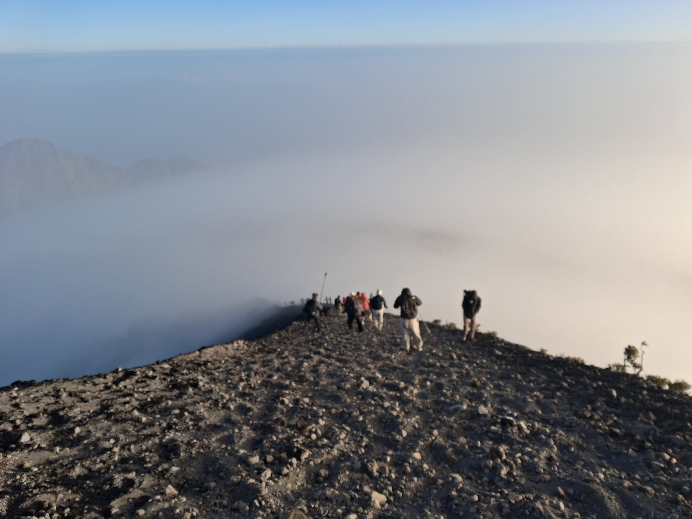

Package Overview
Looking for the complete Mount Rinjani experience?
Our 3 Days 2 Nights package via Sembalun to Senaru is the most popular route for hikers worldwide. It covers all key highlights: conquers the Summit (3,726m), visits the turquoise Segara Anak Lake, relaxes in natural hot springs, and traverses the lush Senaru rainforest.
With full service provided by our Professional Guides and Porters, all your gear, meals, and safety are taken care of. You only need to carry a light daypack and enjoy the journey!
- Start Point: Sembalun Village (1,156m)
- Finish Point: Senaru Village (601m)
- Max Altitude: 3,726m (The Summit)
- Level: Challenging & Rewarding
Detailed Itinerary
Day 1 Sembalun Village – Sembalun Crater Rim
Highlight: Savannah Grassland Trek & Cloud-Level Sunset.
- 07:00 AM: Pick up from your hotel (Senggigi/Kuta Lombok/Mataram) and transfer to Sembalun.
- 08:30 AM: Medical check-up & registration at Rinjani Information Center (RIC). Meet your guide and porters.
- 09:00 AM: Start trekking through wide open savannahs. Smooth trail with open skies.
- 12:00 PM: Lunch break at Pos 2 Tengengean (1,500m) with fresh hot meals prepared by porters.
- 13:30 PM: Continue hiking up through Pos 3 to the steep "7 Hills of Regret" (Bukit Penyesalan).
- 17:00 PM: Arrive at Sembalun Crater Rim (Camp 1 - 2,639m). Enjoy sunset over the lake.
- 18:30 PM: Dinner at camp and early rest for the midnight summit attack.
- Meals: Lunch, Dinner.
Day 2 Summit Attack – Lake & Hot Springs – Senaru Crater Rim
Highlight: Summit Sunrise (3,726m), Natural Hot Springs & Senaru Sunset.
- 02:00 AM: Wake-up call, warm coffee/tea, and light snacks.
- 02:30 AM: Begin the steep summit climb over loose gravel and volcanic sand.
- 06:00 AM: REACH THE SUMMIT (3,726m)! Enjoy 360-degree golden sunrise views over Lombok, Mt. Agung in Bali, and Sumbawa.
- 07:30 AM: Descend back to Sembalun Crater Rim camp for full breakfast.
- 09:30 AM: Start descending down into the crater towards Segara Anak Lake (2,000m).
- 12:30 PM: Arrive at the lake. Lunch, relax, and soak in the natural geothermal hot springs nearby.
- 14:00 PM: Start ascending up the rocky trail to Senaru Crater Rim.
- 17:30 PM: Arrive at Senaru Crater Rim (Camp 2 - 2,641m). Watch spectacular sunset views over Mt. Agung Bali.
- 19:00 PM: Dinner and overnight camping under the stars.
- Meals: Breakfast, Lunch, Dinner.
Day 3 Senaru Crater Rim – Rainforest – Senaru Village
Highlight: Tropical Rainforest & Ebony Black Monkeys.
- 07:00 AM: Breakfast with breathtaking lake & peak views.
- 08:00 AM: Begin descent through the shaded tropical rainforest of Senaru.
- 11:30 AM: Lunch break at Pos 1 or Extra Pos inside the forest.
- 13:30 PM: Arrive at Senaru Gate (601m). Transfer to Tranom Trekking office.
- 14:30 PM: Collect your stored luggage & transfer to your next destination (Port/Airport/Hotel).
- Meals: Breakfast, Lunch.
What is Included?
- Professional Guide: Licensed, English-speaking, and safety trained.
- Porter Service: Carrying all camping gear, food, water, and cooking equipment.
- All Meals & Drinks: 3 full meals a day + fresh fruits, snacks, tea, coffee, mineral water.
- Camping Equipment: Double-layer tent, warm sleeping bag, thick mattress, toilet tent, camping chairs.
- National Park Entrance Ticket & Insurance.
- Private Pick-up & Drop-off Transport.
- 1-night accommodation in Senaru/Sembalun prior to hike.
What is Excluded?
- Personal Porter (to carry your personal daypack).
- Tipping for Guide & Porters.
- Personal gear (Hiking shoes, warm jacket, headlamp, trekking poles).
- Flight or Ferry Tickets.
Frequently Asked Questions
Can beginners take this 3D2N route?
Yes, as long as you have good physical stamina and determination. Day 2 is long and demanding, but the pace is adaptable.
Where can I leave my heavy luggage during the trek?
You can safely store your extra luggage at our office in Senaru or Sembalun free of charge until you finish your trek.